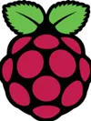
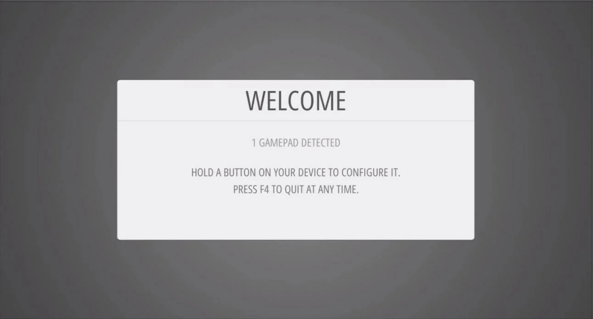
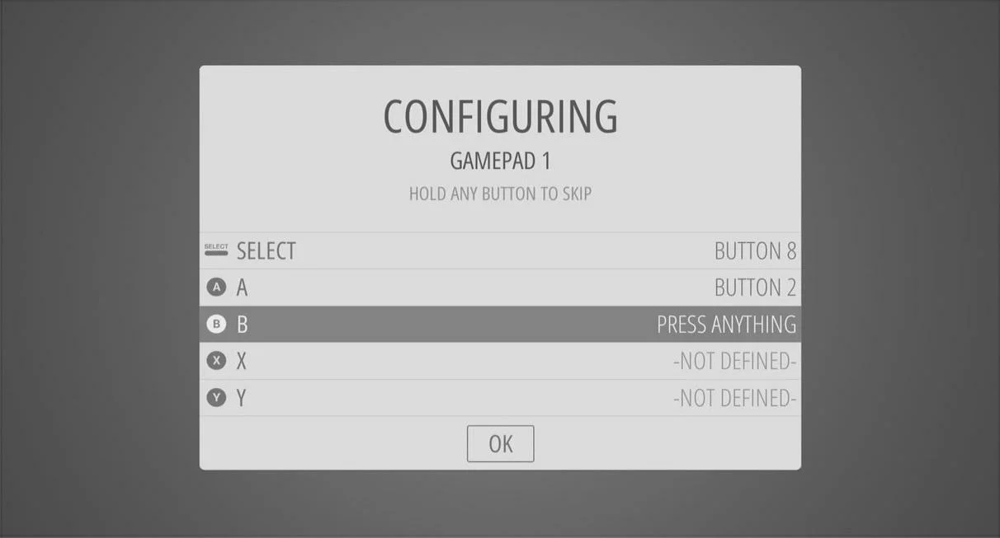
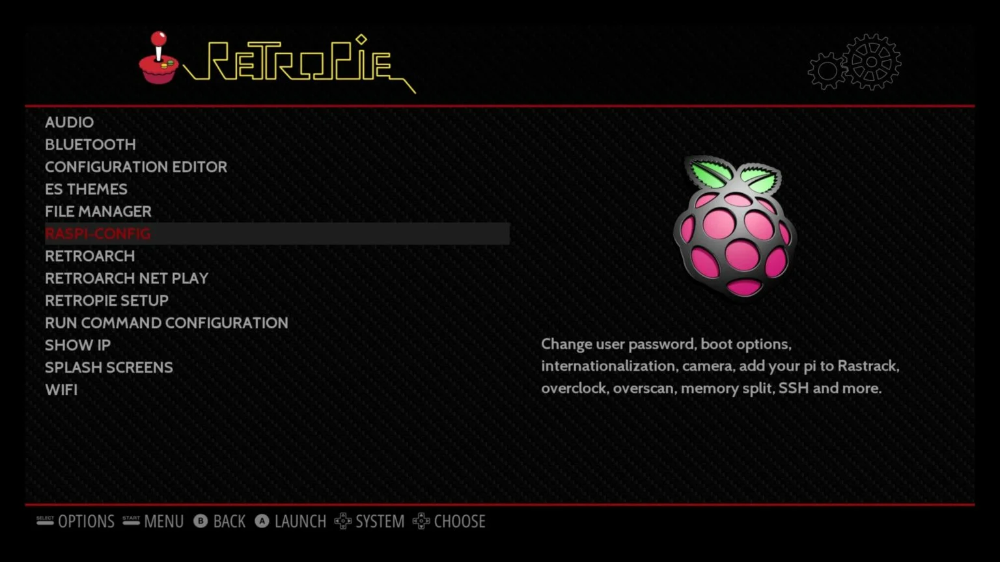
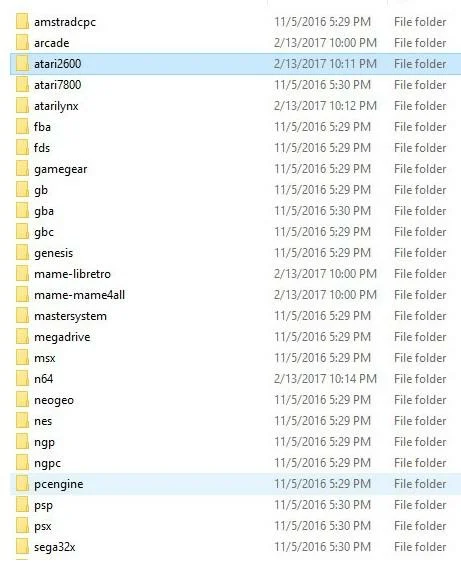
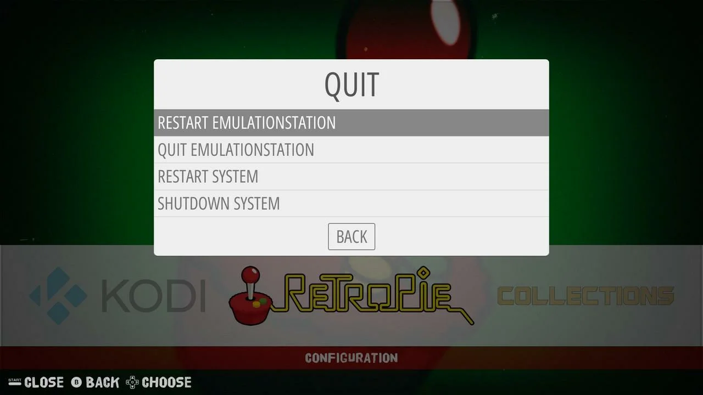

Para la configuración inicial de la tarjeta SD y para añadir juegos a tu RetroPie, necesitarás:
RetroPie es un sistema de emulación de videojuegos libre para Raspberry Pi desarrollado íntegramente por la comunidad.
RetroPie no es ni un sistema operativo ni un emulador propiamente dichos, sino un paquete que trae instalado todo el software necesario para que un usuario sin conocimientos avanzados de informática pueda reproducir su colección de videojuegos antiguos. El sistema está compuesto por tres elementos:
La Raspberry Pi es una computadora de bajo costo y con un tamaño compacto, del porte de una tarjeta de crédito, puede ser conectada a un monitor de computador o un TV, y usarse con un mouse y teclado estándar.
Es capaz de hacer la mayoría de las tareas típicas de un computador de escritorio, desde navegar en internet, reproducir videos en alta resolución, manipular documentos de ofimática, hasta reproducir juegos.
Lo primero que tenemos que hacer antes de configurar RetroPie en la Raspberry Pi es instalarlo. Para ello necesitamos descargar una imagen de este sistema operativo adecuada para nuestra Raspberry Pi.
Dependiendo de la Raspberry Pi en la que vayamos a instalar RetroPie tendremos que bajarnos la imagen adecuada. Actualmente existe una versión para Raspberry Pi y Raspberry Pi Zero, otra para Raspberry Pi 2 y 3 y otra imagen para Raspberry Pi 4. Todas te las puedes descargar del directorio de imágenes semanales de RetroPie.
Una vez tenemos descargada la imagen, pasaremos a grabarla. Los programas recomendados son:
Una vez grabado el sistema operativo, lo conectamos a la Raspberry Pi y lo arrancamos.
Una vez arrancado el sistema, nos aparecerá una pantalla de configuración.
Lo primero que nos pedirá es configurar un mando para poder movernos por los menús y poder jugar a los juegos. Por lo que es necesario tener conectado en un USB un mando o teclado para esta primera configuración de RetroPie.
Lo primero que veremos es esta pantalla que nos pedirá que mantengamos un botón pulsado en nuestro dispositivo para poder configurarlo. Este puede ser un teclado o un mando. Una vez hemos hecho eso, veremos una pantalla donde se irán indicando todos los botones que tenemos que configurar.
Ahora que ya tenemos nuestros mandos listos, es hora de configurar RetroPie para que tenga conexión a internet y podamos acceder a él desde otro ordenador en la misma red. Esto nos permitirá modificar cosas de la configuración de RetroPie desde ese otro ordenador, además de copiar ROMs y muchas cosas más.
Para configurar RetroPie para que use la WiFi de la Raspberry Pi, lo primero que tenemos que hacer es ir a raspi-config para ajustar la región en la que estamos. Esto lo encontraremos en el apartado RetroPie, dentro de los sistemas que tenemos instalados.
Una vez hemos conectado la Raspberry Pi a internet, podemos consultar la IP de esta desde la opción Show IP del apartado RetroPie de EmulationStation.
Una vez que nos hemos quedado con la IP, nos conectaremos a través de otro ordenador donde tenemos los juegos para poder copiarlos.
Para ello es necesario tener instalado y configurado "Samba"
Cuando nos pidan el usuario y la contraseña de Samba debemos introducir pi como usuario y raspberry como contraseña. Una vez accedemos a la Raspberry Pi veremos las carpetas de ROMs, BIOS, configs y splashscreens. La carpeta que nos interesa ahora mismo es la de ROMs, donde tendremos una carpeta por cada sistema que soporta RetroPie. Si no está el sistema que quieres emular, quizás tengas que instalar el emulador, o es posible que RetroPie no lo soporte.
Una vez hemos terminado de copiar las ROMs, pulsamos start y en el Menú principal de RetroPie vamos a Quit. En este menú tendremos opciones para apagar la Raspberry Pi, reiniciarla, salir de EmulationStation o reiniciarlo. En este caso lo que haremos será Reiniciar EmulationStation.
Una vez se ha reiniciado EmulationStation, deberíamos ver los juegos que hemos añadido en los sistemas correspondientes.
Normalmente, una vez tenemos el juego detectado por EmulationStation, lo elegimos, lo cargamos y funcionará correctamente. Pero en algunos sistemas necesitaremos también unos archivos que contienen la BIOS del sistema que vamos a emular. Una vez tenemos la BIOS para nuestro sistema, si es que nos hace falta y las ROMs, ya podemos decir que sí, que tenemos configurado RetroPie para jugar a juegos retro.